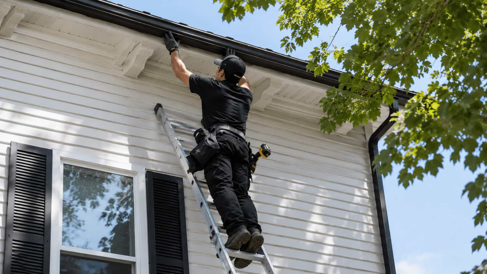

Leaks or dripping
Water dripping from seams, corners, joints, or small damaged areas may lead to a repair-related request.
Gutter service category
Start a structured request for leaks, sagging sections, loose gutters, joint issues, or poor water flow.
Eavora is an independent provider-matching platform. Eavora does not repair, install, inspect, sell, manufacture, or warranty gutter systems directly.


Repair overview
Eavora helps homeowners organize gutter repair-related requests involving leaks, loose sections, sagging gutters, separated joints, overflow points, and water-flow concerns.
Request reasons
These examples help frame the repair category. Final recommendations, scope, timing, pricing, and terms come from independent providers.
Water dripping from seams, corners, joints, or small damaged areas may lead to a repair-related request.
Sections that sag, hold water, or pull away from the roofline may need provider-supplied repair discussion.
Loose corners, disconnected pieces, or separated gutter runs can be described in a repair request.
Overflow, uneven flow, or water spilling in one area may involve repair, cleaning, or drainage questions.

Homeowner control
Submitting a request through Eavora does not require hiring a provider. Review provider-supplied repair details before continuing.
Before you choose
Before continuing with any provider, homeowners may ask about leak source, section condition, fastening, slope, downspout flow, whether cleaning is needed first, whether replacement is recommended, warranty information, licensing, insurance, and scheduling.
If the system is very old or repeatedly failing, replacement may be a better starting point. If overflow is caused by debris, cleaning may fit better.
Repair insight
Describe where the issue appears, when it happens, and whether it is connected to rain, debris, downspouts, or visible damage.
Leaks, sagging, loose sections, and separated joints help frame the repair conversation.

Some overflow issues may involve cleaning or downspout drainage rather than a simple repair.
Ready to start?
Submit the basic details and compare available provider-supplied options before deciding whether to continue.
Repair FAQ
These answers explain the Eavora platform role and what homeowners may want to compare.
No. Eavora is an independent provider-matching platform. Eavora does not repair, install, inspect, sell, manufacture, or warranty gutter systems directly.
Describe the visible issue, where it happens, whether it occurs during rain, whether gutters are sagging or loose, and whether downspouts seem blocked or misdirected.
Yes. Independent providers may discuss repair, partial replacement, full replacement, cleaning, or drainage options depending on the condition and request details.
Any estimate, pricing, scope, scheduling, warranty information, or service terms are provider-supplied. Eavora does not set provider pricing.
No. Submitting a request does not require hiring anyone. Homeowners decide whether to continue after reviewing provider-supplied information.